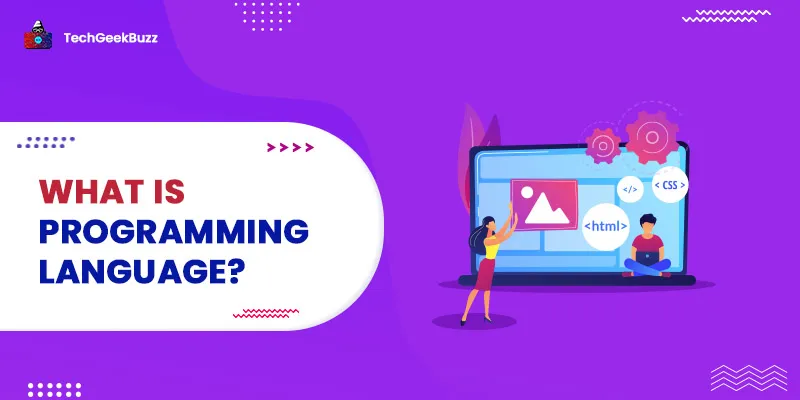

-Programming Language is a computer language that is used by programmers (developers) to communicate with computers.Programming languages are what software developers use to communicate objectives to and between computers. There's a suite of existing languages these professionals use to program applications, scripts, queries and more. Programming languages have their own syntax, rules and structure. Some are proprietary and only work within specific applications, and others have more widespread use. Once a developer learns the technical specifications of a language, they can write source code in a text editor and either compile it for execution or execute it with an interpreter. It is a set of instructions written in any specific language ( C, C++, Java, Python) to perform a specific task.


Click to Run
-While you'll find dozens of ways to classify various programming languages, they generally fall into five major categories. Keep in mind that some languages may fall under more than one type